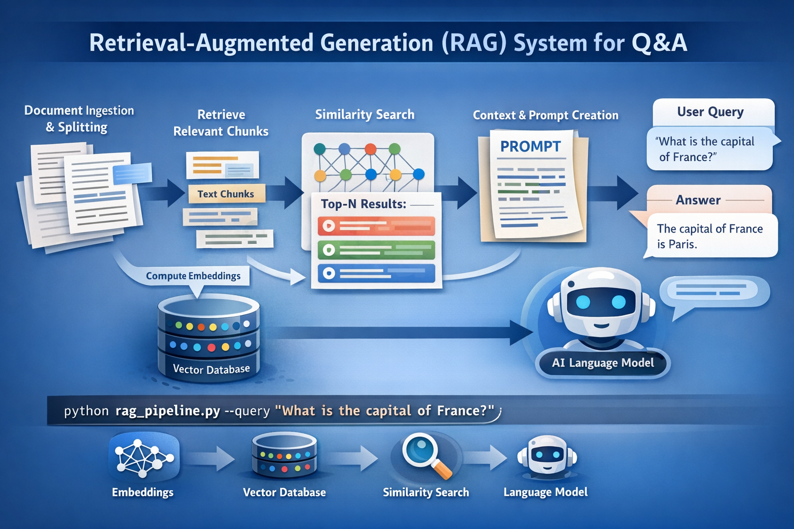
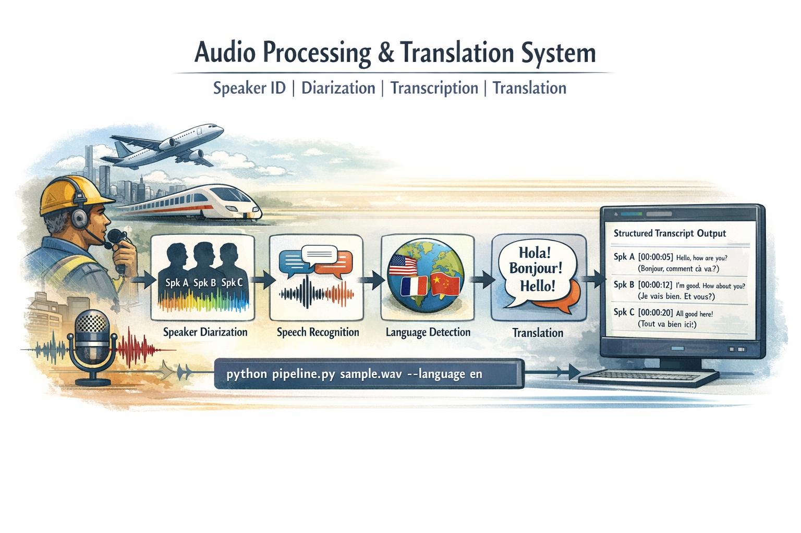
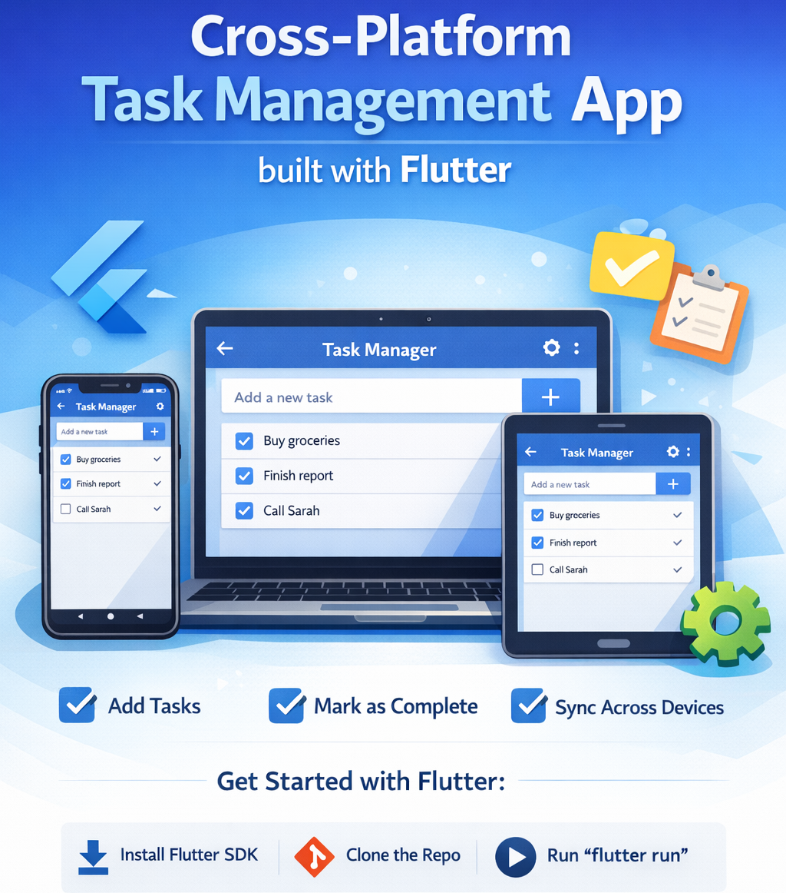
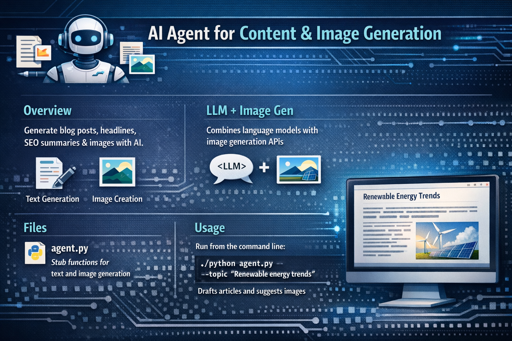

Mechanical design and manufacturability
Started in tooling and design, learning GD&T, manufacturability, and delivery discipline in real industrial settings.
I build physics-aware deep learning methodologies for engineering prediction, enabling faster and more reliable simulation-driven decisions. My work also focuses on Agentic AI and GenAI systems that automate repetitive engineering workflows across CAD, CFD, CAE, and validation pipelines.
Mechanical engineering roots, research depth, and production AI delivery across simulation, CAD, and agentic systems.
Started in tooling and design, learning GD&T, manufacturability, and delivery discipline in real industrial settings.
Built deep-learning workflows for centrifugal pump blockage diagnosis and translated research into measurable model performance.
Building physics-aware and agentic AI systems that connect CAD, CFD/CAE, decision support, and automation.
I began as a mechanical engineer drawn to how machines behave in the real world, then expanded that curiosity into research and production AI.
After completing my BE, I stepped into industry through tooling and design roles where precision, manufacturability, and dependable execution mattered every day. Later, at GTRE under DRDO, I worked around aircraft engine component design and optimization, which sharpened my approach to rigorous engineering, analysis, and cross-functional problem solving.
That engineering exposure pushed me toward research at IIT Indore, where I pursued MS (Research) and worked on centrifugal pump blockage fault diagnosis. I built and tuned a modified InceptionV3 pipeline that achieved about 95% accuracy, while also growing through student leadership roles that strengthened my planning, communication, and execution.
Freelancing later expanded my work into GenAI and agentic AI, including end-to-end audio intelligence systems for noisy Hinglish speech with signal processing, VAD, ASR, normalization, and diarization. Today, at CRI - Havells India Limited, I focus on physics-aware AI that connects CAD, CFD/CAE, and decision-making through GNNs, PointNet, PINNs, meta-models, and automation pipelines.
A strong thread across my work is building complete systems, not just models: automation, tool use, validation, deployment, and real usability. That is why projects like conversational CAD generation fit my strengths well. I work comfortably across mechanical engineering, simulation, and AI, and I translate those domains into practical systems that teams can use.
Senior Engineer - AI/ML at CRI, Havells India Ltd.
Modified InceptionV3 based Fault Diagnosis research publication in Advanced Engineering Informatics.
Builds full solutions across engineering, AI, deployment, and agentic automation.
Technical skills across AI/ML development, signal processing, mechanical systems, and engineering workflows.
Professional journey across industrial AI, research, aircraft engine work, and mechanical design engineering.
Project 1: ML-Based CAD-to-CFD Pipeline
Project 2: Agentic AI Solution for Automated CAD Generation
Research on reliable, data-driven condition monitoring and fault diagnosis for centrifugal pumps under blockage-related faults.
My research, carried out on the suggestion of BARC, focuses on developing a reliable, data-driven condition monitoring and fault diagnosis framework for centrifugal pumps under blockage-related operating faults.
I created controlled experimental conditions to reproduce suction blockage, discharge blockage, and their combined cases at multiple severity levels, captured high-resolution sensor data, and transformed these signals into meaningful diagnostic patterns using advanced time-frequency analysis. Building on this experimental foundation, I implemented and improved deep-learning models, particularly a modified InceptionV3-based approach, to accurately classify pump health and fault severity, with the goal of enabling practical, industry-ready predictive maintenance for critical pumping systems.
Selected freelance and product builds across finance, education, RAG, CAD, audio intelligence, and creator tooling.
Summary: PaperTrading Platform is a full-stack crypto spot paper-trading web app that lets users practice live market trading with virtual money using real-time Binance market data, advanced trading views, and portfolio tracking.
Technical Approach / Stack:
Impact: Built a production-style paper trading ecosystem that simulates real crypto trading environments for learning and strategy practice.
Summary: Book2Quiz is a browser-only React/Vite app that turns PDF textbooks into study questions and lets users practice or take timed tests.
Technical Approach / Stack:
Impact: Reduced traditional frontend development time by leveraging AI tooling, delivering a polished learning web experience with minimal boilerplate.
Summary: Developed a semantic retrieval and generative reasoning platform that ingests heterogeneous documents, correlates information, and answers user queries with context-aware summaries using RAG techniques.

Technical Approach / Stack:
Impact: Delivered a knowledge assistant capable of synthesizing cross-document insights and accelerating research synthesis and decision support.
Summary: Extended Blender with an agentic, retrieval-augmented LLM interface to translate natural language prompts into parametrically generated, industrial-grade CAD models with iterative refinement.
Technical Approach / Stack:
Impact: Enabled non-expert engineers and designers to generate and evolve CAD models through conversational interfaces, reducing early-stage design friction.
Summary: Built an end-to-end multilingual audio intelligence pipeline that identifies and verifies speakers, segments conversations, transcribes speech, and translates across languages and dialects for noisy real-world environments.

Technical Approach / Stack:
Impact: Enabled scalable extraction of actionable communication data from large noisy audio corpora while reducing manual review overhead.
Summary: Developed a lightweight, cross-platform ToDo application to help users organize and track tasks.

Technical Approach / Stack:
Impact: Provided users with a responsive, portable productivity tool tailored for personal workflow management.
Summary: Built an intelligent agent framework to automate financial data ingestion, modeling, and insight generation for stock market analysis.
Technical Approach / Stack:
Impact: Enabled semi-autonomous monitoring and early-warning signals for financial decision-making, reducing manual analysis latency.
Summary: Created an AI assistant that supplies writers and bloggers with contextual content drafts and corresponding visual assets on demand.

Technical Approach / Stack:
Impact: Streamlined content production, enabling faster publishing cycles with consistent quality and reduced ideation friction.
Rendering PDF...
Open to AI/ML engineering roles, research collaboration, and interdisciplinary engineering work across agentic systems, simulation workflows, and industrial intelligence.